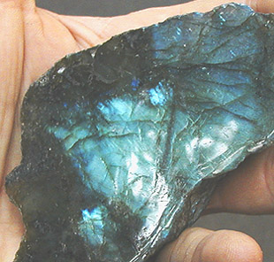

Autres
pierres ignées
Des granites "porphyriques" et certains calcaires roses,
proches du porphyre par leur aspect mais pas du tout par leur
composition ni leur tenue, seraient parfois "confondus" avec
de véritables porphyres.
Il faut dire que la composition du porphyre est extrêmement vague.
Cette pierre pourrait contenir de 35 à 70% de feldspath, 10 à 30% de
feldspath spécifiquement calcique, de 15 à 40%
de quartz, un pourcentage tout aussi variable de plagioclases,
de biotite (5 à 25%),
d'amphiboles
et d'autres minéraux.
Il existe en fait un groupe de roches dites porphyriques dont le point
commun est moins la composition chimique que le fait d'avoir subi un
refroidissement en deux phases. La première correspond à un refroidissement
lent, dans les profondeurs de la croûte terrestre. Lente, elle est propice à la
formation de phénocristaux. La seconde
est plus rapide, correspondant à une montée du magma vers la surface.
Elle provoque l'apparition de microlithes.
L'obsidienne
Photo : avec l'aide de Catherine Lisack

Pierre ignée effusive.
C'est l'un des deux seuls véritables "verres
naturels" dont les conditions de formation sont exposées dans un
passage de l'article Le verre.
Composition : silice en très forte
quantité. Autres éléments : fer (donne un aspect sombre, noirâtre),
magnésium (aspect vert) calcium, potassium, sodium, etc. (colorations bleues,
pourpres, brunes et même mouchetés blancs).
Minerai : en nodules ou en strates importantes parmi d'autres
pierres effusives. Les minerais présentant des facettes cristallines sont à
éviter (sauf si une taille complète n'est pas envisagée).
Densité 2,4 à 2,6 environ. Dureté : nettement inférieure à
celle du quartz.
Provenances : Italie, Mexique, Écosse, États-Unis d'Amérique,
etc.
Il s'agit d'une pierre semi-précieuse.
Son emploi dans le passé était extrêmement courant au néolithique. En
Europe et en Afrique du Nord, de véritables "centres industriels"
produisaient haches, bijoux et autres objets de formes parfaites qui voyageaient
sur des milliers de kilomètres, sur terre et sur mer, déjà.
Autant dire que l'art de la taille de l'obsidienne avait déjà atteint son
plus haut degré de perfection technique et formelle voici cinq ou six mille
ans.
La structure très fine de cette pierre et sa dureté autorisent la
réalisation de lames très coupantes.
Mais parce qu'elle est cassable,
l'obsidienne se travaille surtout par abrasion. Sable, émeri
et autres substances sont utilisés à cette fin depuis des périodes très
reculées.
Le polissage donne un aspect nettement brillant, propre à cette pierre (voir
photo).
La diorite
Pierre ignée intrusive moyennement
grenue, elle est constituée de cristaux blancs de feldspath
(système triclinique), de biotite et de hornblende
ou autres amphiboles, matériaux verts, noirs ou
gris foncé. Les rares variétés chargées de quartz sont considérées comme
fondamentalement différentes (on les appelle granodiorites).
La taille et le polissage de cette pierre extrêmement dure et hétérogène
sont très difficiles.
Elle fut pourtant employée dès l'Égypte ancienne.
La
syénite
Cette pierre ignée intrusive ressemble
au granit (son grain est assez grossier), mais elle ne contient pas de quartz.
Sa résistance est supérieure à celle du granit et, pour cette raison, elle
est parfois utilisée comme matériau de construction très solide. Sa
composition est proche de celle de la diorite mais elle diffère de celle-ci par
son système cristallin.
Elle contient du feldspath, du mica
et des amphiboles ou des pyroxènes.
Les variétés de syénites sont en fait plutôt nombreuses bien que ces minéraux soient relativement rares.
Leurs couleurs vont du blanc au rose en passant par différentes teintes de
gris.
Leur taille ne présente pas de difficulté spécifique par rapport au
granit.
Provenances : Alpes, Norvège, Afrique, Fédération de Russie, États-Unis
d'Amérique, etc.
La diabase
Roche ignée effusive. Bien que dépourvue
de quartz, elle est très dure, très difficile à tailler et à polir.
Légèrement grenue, elle ressemble à un basalte ayant un peu de grain.
Composant principal : feldspath (système
triclinique - voir cristaux). La diabase peut
inclure des olivines, des pyroxènes,
des amphiboles, des biotites,
etc. Des centaines de variétés peuvent émaner d'une seule source volcanique.
Densité : un peu plus de 3.
Coloration : juxtaposition à dominante sombre de vert foncé, parfois
presque noir, et de blanc.
Retour
début de page